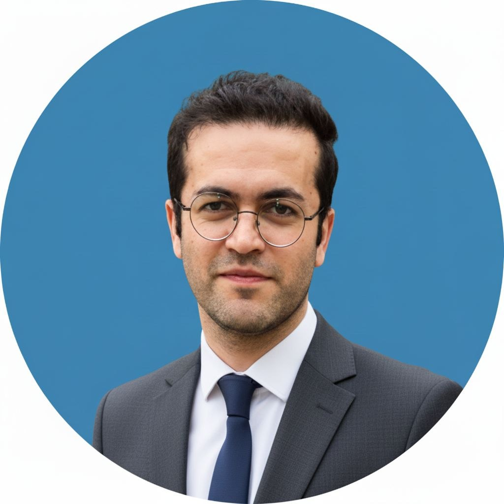

Principal researcher

- Fatigue & Fracture
- Biomechanics
- Metamaterials
- Abaqus / FEA
I am an interdisciplinary engineering researcher specializing in mechanical and aerospace engineering, embodying the continuous evolution of a childhood curiosity that has shaped my entire 40-year journey.
Listen to the whispers of your dreaming soul,
Speak only truth to keep your spirit whole.
Fix your steady gaze upon a single star,
Work with burning fire to reach for what you are.
And let no passing shadow dim your inner light,
For nothing can eclipse a purpose shining bright.
With sincere dedication
Pouria 🌻
// Research modules
Overview and educational materials on fatigue failure, crack initiation, and stress-intensity analysis.
Research materials focusing on computational neuroscience, brain-tissue modeling, and neural mechanics.
Investigation into mechanical energy dissipation, metamaterials, and impact dynamics.
// Research environment: AntiPrism structures
Select a tutorial part from the playlist below.
AntiPrism Tutorial — Part 1
// Video playlist
Studies on cementitious-matrix toughness, quasi-brittle fracture, and microstructural analysis.